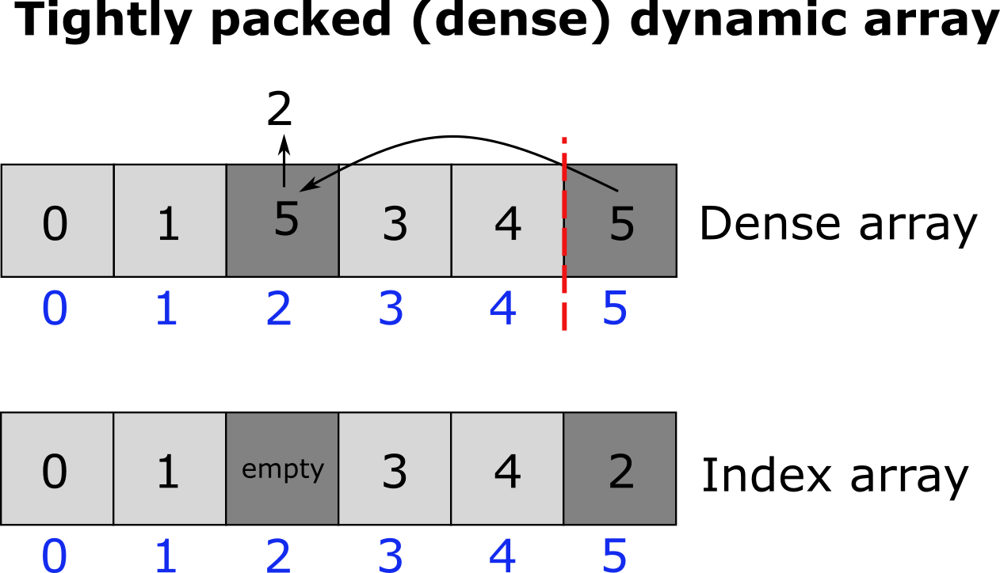
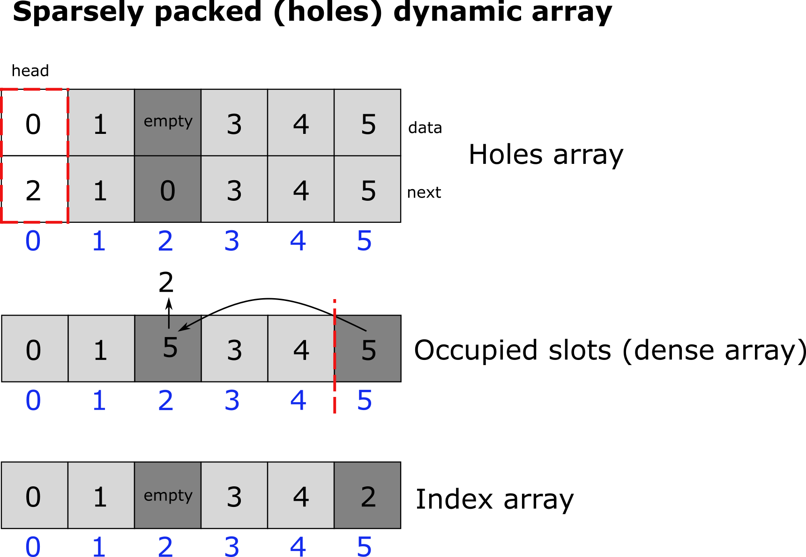

dynamic_array_util
Short description
DenseArray
- class pyrid.data_structures.dynamic_array_util.DenseArray(*args, **kwargs)
Implementation of a dense dynamics array.
Notes
A dense dynamic array is a dynamic array (similar to lists in python or vectors in C++) where elements can be quickly deleted via a pop and swap mechanism. The problem with standard numpy arrays but also lsist and C++ vectors is that deletion of elements is very expensive. If we want to delete an element at index m of a numpy array of size n, numpy would create a new array that is one element smaller and copy all te data from the original array to the new array. ALso, if we want to increase the size of a numpy array by appending an element, again, a new array would need to be created and all data needs to be copied. This is extremely computationaly expensive. One way to create a dynamic array (and python lists work in that way) is, to not increase the array size each time an element is added but invcrease the array size by some multiplicative factor (usually 2). This consumes more memory but saves us from creating new arrays all the time. Now we simply need to keep track of the number of elements in the array (the length of the array) and the actual capacity which can be much larger. To delete elements from the array, one strait forward method is to just take the last element of the array and copy its data to wherever we want to delete an element (swapping). Next, we simply pop out the last element by decreasing the array length by 1. We call this type of array a ‘dense array’ because it keeps the array tightly packed. One issue with this method is that, if we later on need to find an element by its original index, we need to keep track of that. One can easily solve this issue by keeping a second array that saves for each index the current location in the dense array.
- Attributes:
- nint
Count actual elements in the array.
- capacityint
Total capacity of the array.
- indexint64[:]
Array to keep track of element indices.
- index_capacityint
Total capacity of the index array.
- Aint64[:]
Array containing the actual data.
Methods
add(self, pid)
Adds a particle index to the array.
remove(self, k)
Removes the element with index k from the array.
_resize(self, new_cap)
Resize internal data array to a new capacity (new_cap).
_resize_index(self, new_cap)
Resize the index array to a new capacity (new_cap).
make_array(self, new_cap)
Returns a new array with capacity new_cap.
make_index(self, new_cap)
Returns a new array with capacity new_cap.
clear(self)
Clears the array by setting the number of elements in the array to 0.
- _resize(new_cap)[source]
Resize internal data array to a new capacity (new_cap).
- Parameters:
- new_capint64
New array capacity.
- _resize_index(new_cap)[source]
Resize the index array to a new capacity (new_cap).
- Parameters:
- new_capint64
New array capacity.
- make_array(new_cap)[source]
Returns a new array with capacity new_cap
- Parameters:
- new_capint64
New array capacity.
- Returns:
- int64[:]
numpy zeros array of size new_cap.
{kind=link}
HolesArray
- class pyrid.data_structures.dynamic_array_util.HolesArray(item_t)[source]
Implementation of a dynamics array “with holes”.
Notes
A dynamic array with holes is a dynamic array (similar to lists in python or vectors in C++) where elements can be quickly deleted by creating ‘holes’ in the array. These holes are tracked via a free linked list. The array with holes has the benefit over ‘dense arrays’, that elements keep their original index, because they are not shifted/swapped at any point due to deletion of other elements. This makes accessing elements by index a bit faster compared to the dense array approach. However, iterating over the elements in the array becomes more complex, because we need to skip the holes. Therefore, we add a second array, which is a dense array, that saves the indices of all the occupie slots in the array with holes (alternatively we could add another linked list that connects all occupied slots). Now we can iterate over all elements in the holes array by iterating over the dense array. Keep in mind, however, that the order is not preserved in the dense array, since, whenever we delete an element from the holes array, we also need to delete this element from the dense array by the pop and swap mechanism. As such, this method does not work well if we need to iterate over a sorted array. As with the dense dynamic array, the array size is increased by a multiplicative factor of 2 as soon as the capacity limit is reached.
- Attributes:
- nint
Count actual elements in the array.
- capacityint
Total capacity of the array.
- occupiedobj
Dense array that keeps track of the occupied slots.
- Dataarray_like
Structured numpy array containing a linked list, connecting the holes in the array, and containing the actual data. dtype = np.dtype([(‘next’, np.uint64),(‘name’, ‘U20’), … , align = True)
- slotint64
saves the current slot when a new item is added.
- item_tnp.dtype
structured array data type that contains fields for the free linked list and the actual data. dtype = np.dtype([(‘next’, np.uint64),(‘name’, ‘U20’), … , align = True)
Methods
len(self)
Returns the length of the array. The length is defined by the number of elements in the array not counting the holes.
iterator(self)
Iterates through all nonempty (no-hole) elements in the Data array. Note: This method is not supported by Numba at the time.
insert(self, value)
Inserts a new item into an empty slot (a hole) of the array or appends it if no empty slots are available.
add_to_occupied(self, slot)
Adds a slot index to the occupied indices list.
_append(self, value)
Appends an item to the end of the array. If the capacity of the array is reached, the array is resized.
delete(self, i)
Deletes an item from the array. It does so by creating a hole in the array.
_resize(self, new_cap)
Resizes the Data array to capacity new_cap.
make_array(self, new_cap)
Returns a new array with new_cap capacity.
- __getitem__(k)[source]
Return element at index k+1 (element 0 is reserved for the head of the free list). Any item will be returned, also holes, because checking whether an item is a hole at each access operation is too expensive. Also, there will be no test, whether the index is within bounds, as this can also reduce speed by up to 25%. To get a list of all items which are not holes, use the occupied attribute!
- Parameters:
- kint64
Index
- Returns:
- array like
Value of the structured array at index k (actually k+1)
- __setitem__(k, value)[source]
Sets the value of the array at index k+1. Index 0 is reserved for the head of the free list which is used to find the holes in the array.
- Parameters:
- kint64
Index
- valueself.item_t
value to insert at index k. The data type is whatever has been set for the np.dtype of the structured array that is the Data attribute. The data type is kept by the item_t attribute.
- _append(value)[source]
Appends an item to the end of the array. If the capacity of the array is reached, the array is resized.
- Parameters:
- valueself.item_t
value to insert at index k. The data type is whatever has been set for the np.dtype of the structured array that is the Data attribute. The data type is kept by the item_t attribute.
- _resize(new_cap)[source]
Resizes the Data array to capacity new_cap.
- Parameters:
- new_capint64
Array capacity.
- add_to_occupied(slot)[source]
Adds a slot index to the occupied indices list.
- Parameters:
- slotint64
Slot index.
- delete(i)[source]
Deletes an item from the array. It does so by creating a hole in the array. The holes are kept track of by a free linked list. A hole is created by removing the item from the list of of occupied indices and updating the free linked list: The head of the free linked list now points to the deleted item and the next pointer at the index of the deleted item points to the hole where the head originally pointed to.
- Parameters:
- iint64
Index
- parameter_2dtype
Some Information
- insert(value)[source]
Inserts a new item into an empty slot (a hole) of the array or appends it if no empty slots are available. The method does so by accessing the next pointer of the head element. If the next pointer is 0, i.e. it points to the head element itself, no empty slots are available and the new item is appended to the array by calling the _append method. If the next pointer is greater zero, the new item is added at the index the next pointer points to.
- Parameters:
- valueself.item_t
value to insert at index k. The data type is whatever has been set for the np.dtype of the structured array that is the Data attribute. The data type is kept by the item_t attribute.
- iterator()[source]
Iterates through all nonempty (no-hole) elements in the Data array. Note: This method is not supported by Numba at the time.
{kind=link}
HolesArrayReact
- class pyrid.data_structures.dynamic_array_util.HolesArrayReact(*args, **kwargs)
Implementation of a dynamics array “with holes” that is used for the index attribute in PyRIDs Reaction class. In the Reaction class this array keeps track of the reaction indices
pyrid.reactions.reactions_registry_util.Reaction.- Attributes:
- nint
Count actual elements in the array.
- capacityint
Total capacity of the array.
- occupiedobj
Dense array that keeps track of the occupied slots.
- Dataarray_like
Structured numpy array containing a linked list, connecting the holes in the array, and containing the actual data.
- slotint64
saves the current slot when a new item is added.
- item_tnp.dtype
structured array data type that contains fields for the free linked list and the actual data.
Methods
allocate_slot()
Allocates a new slot by finding the next hole in the array.
_resize(new_cap)
Increases the size of the array to capacity new_cap.
make_array(new_cap)
Returns a new array with new_cap capacity
clear()
clears the array by setting the number of currently inserted elements to 0.
- _resize(new_cap)[source]
Increases the size of the array to capacity new_cap.
- Parameters:
- new_capint
array size
- allocate_slot()[source]
Allocates a new slot by finding the next hole in the array. If no empty slot/hole is available the array is resized.
- Returns:
- int64
Index of the next available slot in the array.
Notes
The allocate_slot method does only allocate a new slot but does not insert a new item / value at that slots´ location. It only returns the index of that allocated slot. However, allocate_slot automatically assumes that the slot will be filled with Data after it has been called and therefore already updates the free linked list and resizes the array (in case no holes are available and the array capacity has been reached).
DenseArrayReact
- class pyrid.data_structures.dynamic_array_util.DenseArrayReact(item_t_main)[source]
Implementation of a dense dynamics array that is used as a parent class for PyRIDs Reaction class
pyrid.reactions.reactions_registry_util.Reaction.- Attributes:
- nnb.int64
Number of reactions in list.
- n_successnb.int64
Number of successfull reactions.
- n_totalnb.int64
Number of total reactions.
- capacitynb.int64
Current capacity of dynamic array.
- Aarray_like
Struct array containing reaction data reaction data.
dtype = np.dtype([(‘educts_index’, (np.int64, (2,))), (‘id’, np.uint64), (‘unique_educts_id’, np.float64)], align=True)
- item_tnumpy dtype
dtype of reaction struct array A (np.dtype([(‘educts_index’, (np.int64, (2,))), (‘id’, np.uint64), (‘unique_educts_id’, np.float64)], align=True))
- indexholes_array_react.class_type.instance_type
Index saved in dynamic array with holes.
- slotnb.uint64
Current/last assigned slot of dynamic array (index).
- headnb.types.DictType(nb.int64, nb.int64[:])
Head of free linked list containing all reactions of an educt.
Methods
_resize(new_cap)
Increases the size of the array to capacity new_cap.
make_array(new_cap)
Creates a new array of size new_cap.
clear()
Clears the array by setting the number of currently inserted elements to 0.